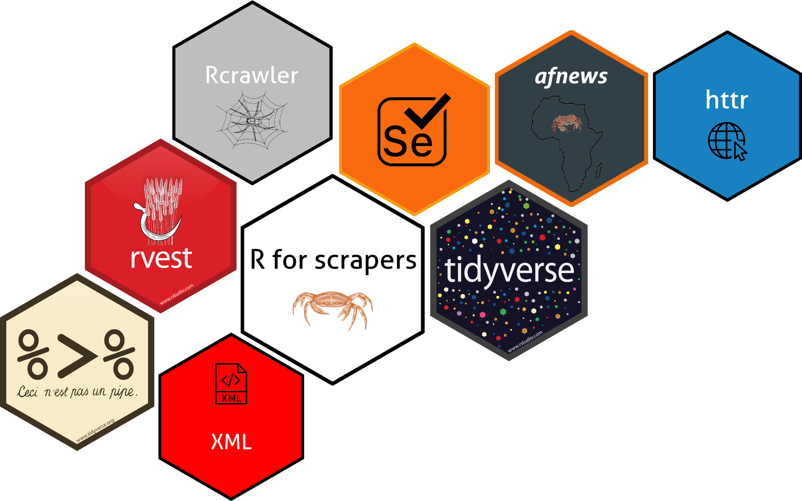

R pour l’extraction de données sur le web : textes, images, tables et pdfs
Cas pratiques, avec ou sans APIs
juillet 22, 2022
Avant-propos
Il s’agit d’un apport pour vous aider à démarrer, que vous soyez étudiant, ou pour vous apporter des techniques faciles et avancées, que vous soyez professionnel, dans la collecte des données sur le web. Le web scraping n’est qu’une des nombreuses techniques de collecte de données. Pourquoi est-il important de collecter des données ? Eh bien, peu importe votre niveau d’expertise en tant que spécialiste des données, si vous n’avez pas de données, que ferez-vous ? En tant que scientifique des données, l’on est toujours en perpétuelle recherche de données pour notre travail.
Très souvent (sinon toujours), les données bien structurées dont vous avez besoin pour l’analyse n’existent pas et vous devez les collecter d’une manière ou d’une autre par vous-même. De nos jours, une grande majorité des données sont des contenus générés par les utilisateurs, présentés au format HTML (HyperText Markup Language) non structuré. Mais ce n’est pas le pire – les données sont généralement dynamiques et varient dans le temps (par exemple, la note d’un vin particulier ou votre liste d’amis Facebook, ou encore des données boursières).
La bonne chose est que toutes les informations se trouvent sur Internet dans un format lisible par l’homme, c’est-à-dire que vous avez accès à ces données. Par conséquent, le problème n’est pas d’accéder aux données, mais de savoir comment convertir ces informations dans un format structuré (pensez à un tableau ou à une feuille de calcul). Dans ce livre, nous apprendrons ce qu’est le web scraping, comment scraper en utilisant R et quand c’est légal.
Un livre ?, j’ai longuement refléchi sur la question, je me suis posé plusieurs questions dont une qui revenait constamment: —a-t-on vraiment besoin d’un autre livre sur le web scraping ?—.
Je n’avais pas prévu d’écrire un livre. Il y a environ cinq ans, j’ai commencé à faire du scraping, et comme beaucoup de programmeurs, mes projets personnels avec de nombreuses astuces ont commencé à se développer.
Ensuite, j’ai pensé qu’un package R pourrait aider plus de gens, alors après avoir travaillé sur mes codes, j’ai publié le package afnews en 2021.
J’ai commencé le projet du livre, il y’a de cela deux ans. Mon poste de data scientist que j’occupais et mes interventions en tant qu’enseignant en data science dans les universités m’ont contraint à accorder moins de temps à ce livre. Mais actuellement en thèse, j’ai réussi à libérer un peu plus de temps pour le terminer.
Celui qui sait tout ne prend pas la peine d’écrire un livre à ce sujet.
—Ardit Beqiri
Veganism, Philosophie, Langues, Macédoine (ancienne République yougoslave, de Kicevo, 1994)
À quoi attendre de ce livre
Aujourd’hui, des millions de données circulent à travers internet. Il est d’ailleurs admis que 90% des données générées par l’humanité s’est fait sur ces 2 dernières années que sur l’ensemble des décennies précédentes. Ainsi, lorsque vous occupez un rôle de Data Analyst, ou de Data Engineer, savoir collecter ces données est la première étape indispensable de toute analyse décisionnelle. Le web scraping est l’une des techniques les plus efficaces que vous devez maîtriser pour capturer les données qui sont hors du système d’information des entreprises.
Le web scraping est un ensemble de techniques permettant l’extraction des données d’un site web via un programme, un logiciel automatique ou via un autre site. En pratique, on distingue plusieurs techniques de web scraping :
- Le copier-coller manuel humain
- Les logiciels/sites de web scraping
- L’ utilisation des programmes et des API
- L’ utilisation des programmes et l’analyse des contenus HTML
Dans ce livre, nous aborderons les trois dernières techniques avec une attention sur le scraping sans API (avec analyse du html) et avec API. A la fin de celui-ci, vous devriez être en mesure d’extraire des données à l’aide de R sur tous les types de sites web (le web 1.0 ou le web 2.0). Nous aborderons également les systèmes de robot d’exploration ou minage du web (crawling web), qui ont été largement utilisés par les moteurs de recherche (tels que Google, Bing, etc.) pour l’indexation web et qui nous permettront de parcourir de milliers de sites web à la recherche de contenus spécifiques.

Structure du livre
Le web scraping avec R ou l’extraction des données web (le web mining) avec R est sûrement une forme magique de la programmation.
En écrivant un programme R simple et automatisé, vous pouvez explorer et extraire tous les types de données (images, textuelles, tables/tableaux, documents/pdfs/) sur tous les sites web (web statique, web dynamique).
Ce livre est d’un apport pour vous aider à démarrer, ou pour vous apporter des techniques faciles et avancées, que vous soyez étudiant ou professionnel dans la data. Il est constitué de 12 chapitres, repartis en 4 grandes parties :
La Partie I sur les généralités, vous montre les particularités des contenus web (web 1.0 ou web 2.0), les processus des échanges des données (client-serveur) et les outils et techniques qu’il faut pour extraire ces données avec R. Cette partie vous montre également comment créer des scrapers polis juridiquement et l’analyse des robot.txt.
Les parties II et III montrent les étapes pour un projet de web scraping avec ou sans APIs, des techniques et astuces avancées. Vous avez également plusieurs projets pratiques pour tout type de sites web et tout type de données que vous souhaitez extraire. Vous apprendrez également comment automatiser des scrapers sur Google cloud avec docker en utilisant Google cloud builder, runner et scheduler étape par étape.
La partie IV traite du minage et l’exploration du web appelé “robot crawler” ou d’indexation web (qui permet de parcourir des centaines et milliers de sites web), et l’implémentation étape par étape des robots crawler + scraper.
Ressources et scripts
Vous pouvez télécharger l’ensemble des programmes R disponible dans ce libre depuis ce lien :
Remerciements
De nombreuses personnes de la communauté R m’ont inspiré et m’ont fourni les connaissances nécessaires pour écrire ce livre, parmi lesquels Quatinassia Harris – QHarr–, pour son soutien à travers les réponses à mes questions sur stackoverflow.com.
Les premières critiques ont également partagé de précieux commentaires qui ont contribué à améliorer considérablement le livre. Mes remerciements vont vers SANOU Do Edmond, doctorant en 3ème année de maths appliquée de l’université Paris Saclay, Violaine ANTOINE, Dr. en informatique et maître de conférence de l’université Clermont Auvergne, et pour finir M. Adalou NIAONE, graphiste.
Dévouement
A ma petite amie, Ingrid . Sans ses encouragements et son soutien, ce livre aurait sûrement fini dans /dev/null.
A propos de l’auteur
Armel Soubeiga est actuellement doctorant en apprentissage automatique de l’université Clermont Auvergne et titulaire d’un master en statistiques et science des données de l’université de Grenoble Alpes. Il enseigne aussi les mathématiques, l’apprentissage automatique et le Big Data dans des universités du Burkina Faso et Clermont-Ferrand. Auparavant, il était data scientist chez RCTs. Il peut être trouvé sur sa page , LinkedIn et GitHub .